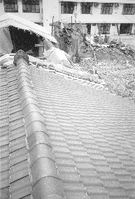

| Un récit de ce monde |
Compilé par l'équipe de rédaction de la revue de Nantou, Formose |
|  |
Toutes les maisons traditionnelles avoisinantes faites en terre se sont effondrées, à l'exception de celle de frère Jian, la seule restée intacte. Les bâtiments en béton à l'arrière de la photo étaient un jardin d'enfant. Le tremblement a fait sortir ses barres de renforcement et a fendu le sol. Certaines maisons voisines sont couvertes d'un auvent contre la pluie. Les maisons à droite se sont effondrées et certaines ont été dégagées. |